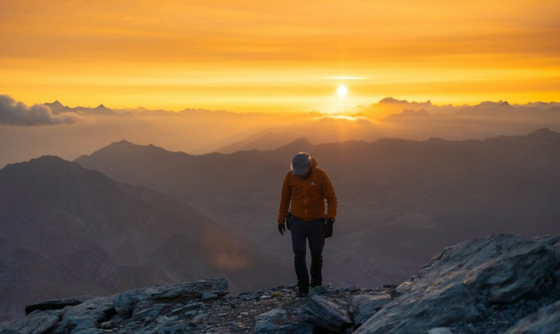
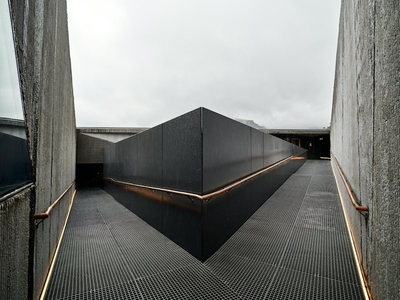

01 / Scene recognition

Scene analysisPerson
Mountains
Generated by AI
A hiker crosses a ridge at sunrise.
See the scene. Tag it.
Generate Chinese tags and summaries for your footage.
Save the shots that inspire you. Find them again by tag.A local library built for video.
Switch between Videos and Tags by clicking or using the left and right arrow keys.
Try “mountains”, “city”, or “coast”.
8 clips
Save footage as you go and find it when you need it.
ClipDen helps organize your library so you can focus on creating.

Scene analysisA hiker crosses a ridge at sunrise.
Generate Chinese tags and summaries for your footage.
Hold Shift while dragging to save a clip and keep working.

Choose a local Ollama model or a cloud API.
Hold Shift and drag a clip into ClipDen.
Set up a model to generate Chinese tags and summaries.
Search by what you remember to find the right clip.
The walkthrough has Chinese on-screen text and plays muted by default. Use the controls to unmute, pause, or go full screen.
Your videos stay in their original location. ClipDen stores their paths, thumbnails, tags, and summaries locally. If you move a file, you can relink it in the properties panel.
Local models work offline and upload nothing. Cloud models receive selected frames and the filename. The original video stays on your device.
ClipDen supports MP4, MOV, M4V, AVI, MKV, and WebM.
ClipDen is available on Windows. A Mac version will be considered if enough users request it.
ClipDen is built for video creators. It keeps footage in place, tags clips with AI, and lets you search in natural language.
ClipDen is still being refined. There are no near-term plans to charge.
ClipDen is independently developed and currently unsigned due to the cost of a code-signing certificate. Some systems may display an unrecognized app warning.
Windows x64